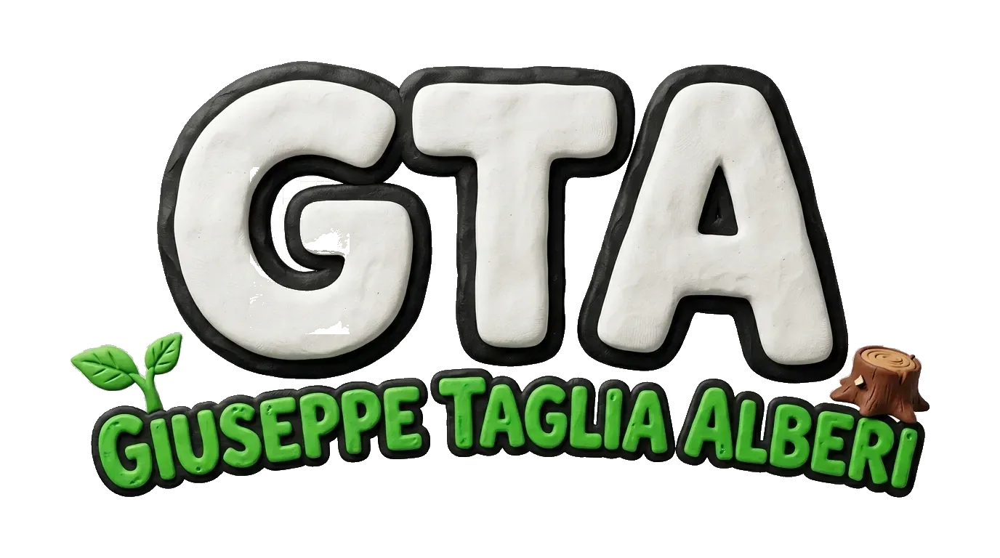

Esplorando le fosse granarie di Cerignola…
 0
0Cerignola (FG) — Tavoliere delle Puglie…
🌾 CERIGNOLA: LA CITTÀ DI BALDU
Assalti a portavalori, auto cannibalizzate, pusher e il Duomo Tonti!
Fosse GranariePortavalori SventratoRuspa ArieteAuto CannibalizzateOfficine ClandestineBustinePusherPosto di BloccoGazzella CarabinieriDuomo Tonti
CAPITOLO SPECIALE
Gira lo smartphone
In orizzontale, la visuale del Tavoliere è doppia.
AD muovitiSPAZIO salta↓ stompESC pausaF fullscreen
Playtest
Errore grafico.
Questo mondo richiede WebGL. Prova ad aggiornare il browser o abilitare l'accelerazione hardware.